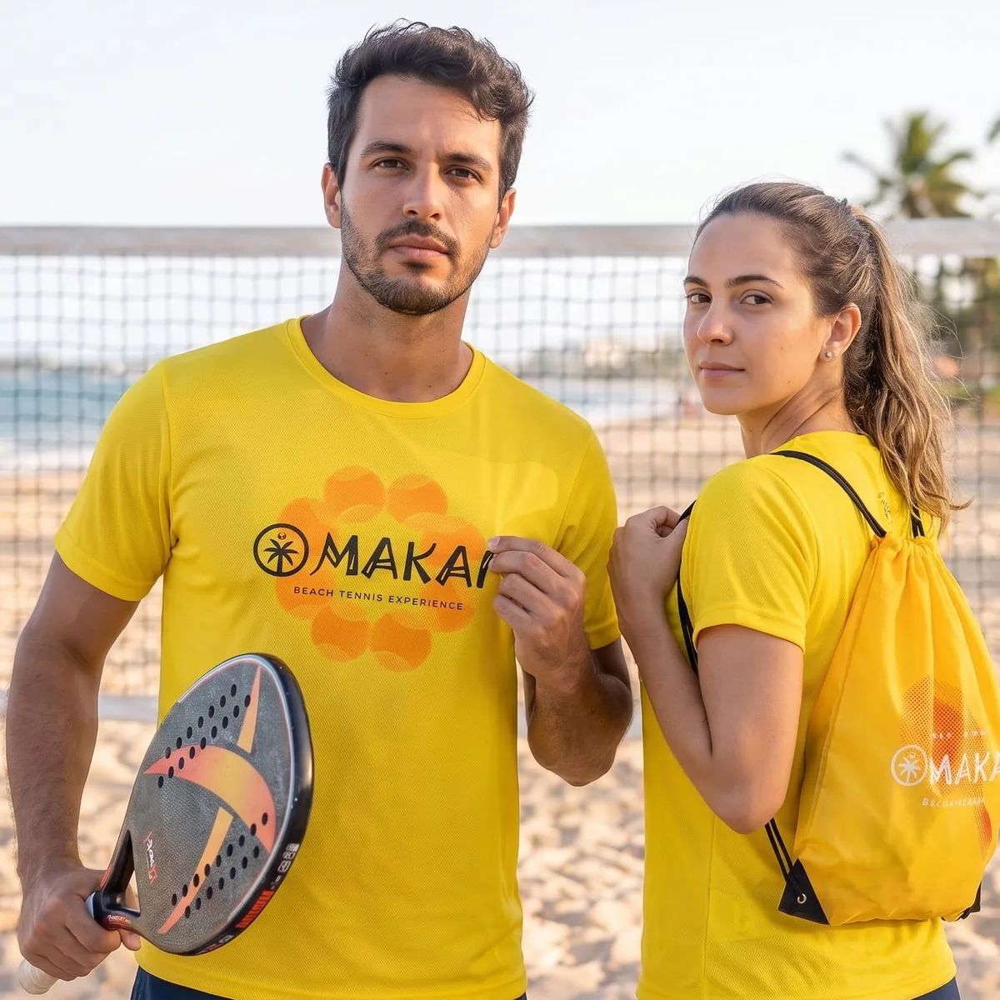
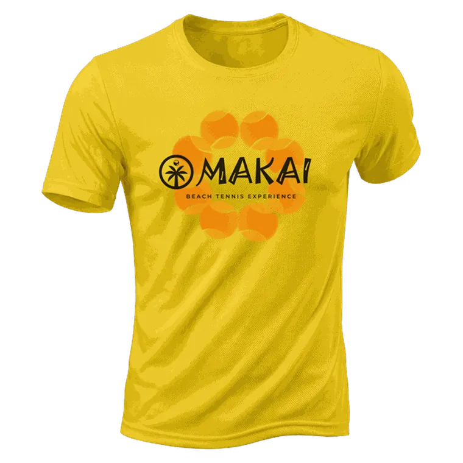
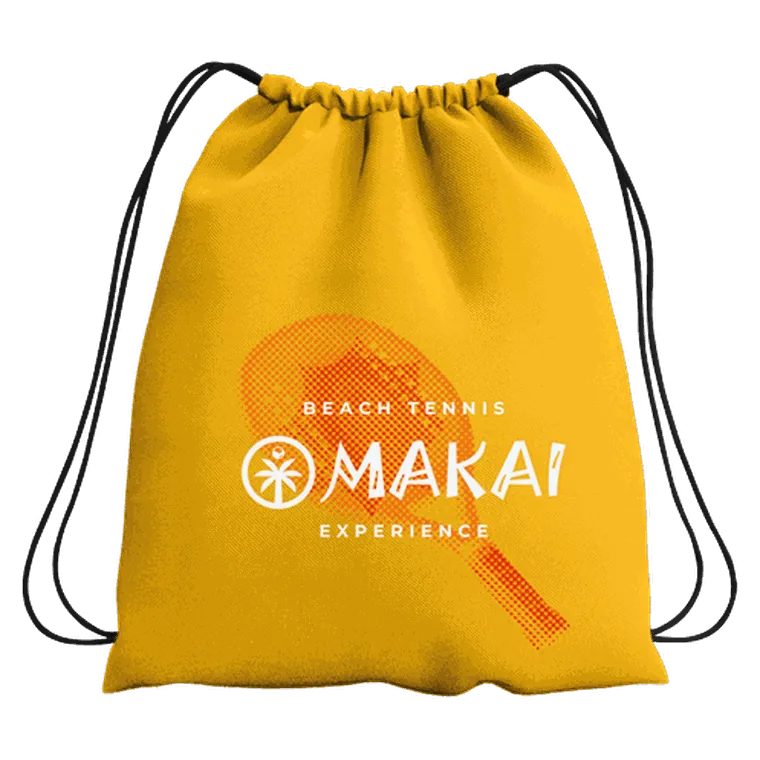
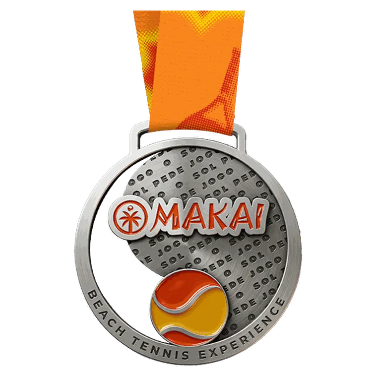
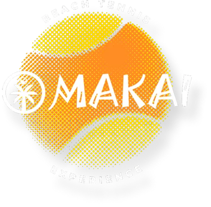
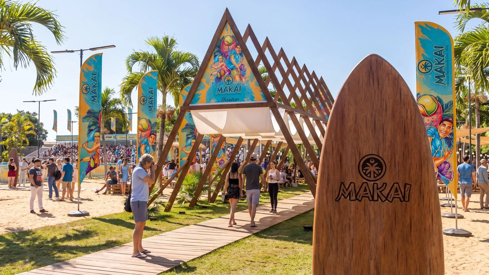
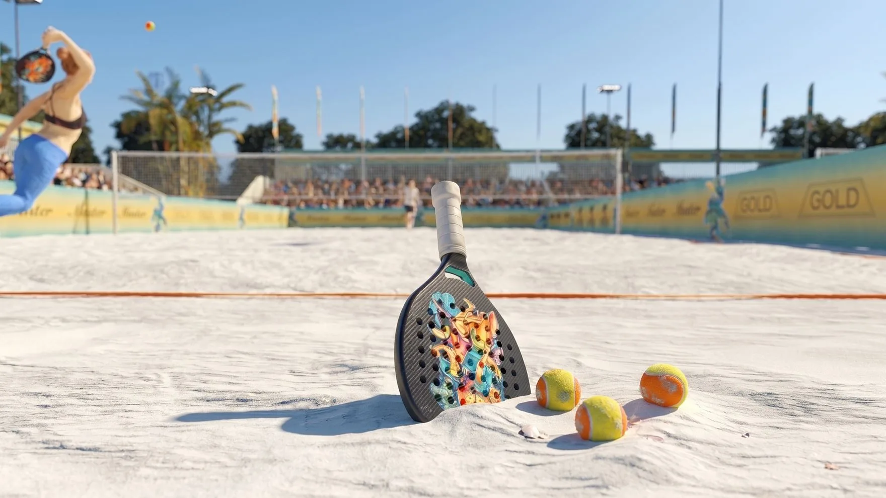
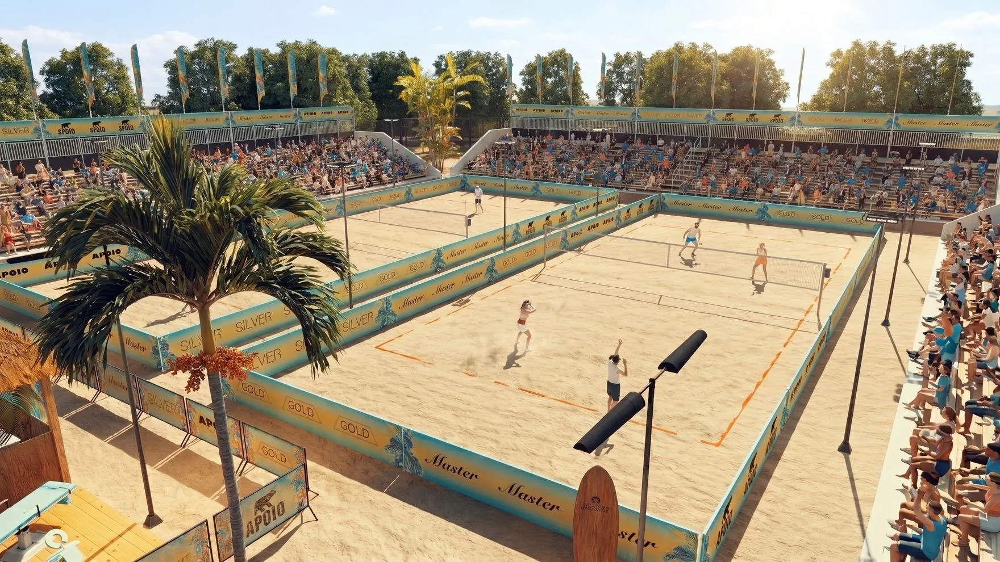
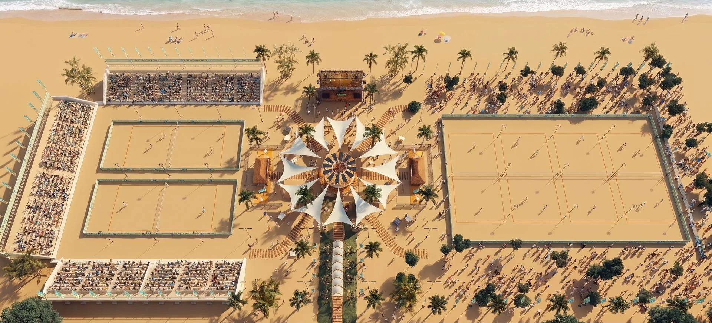
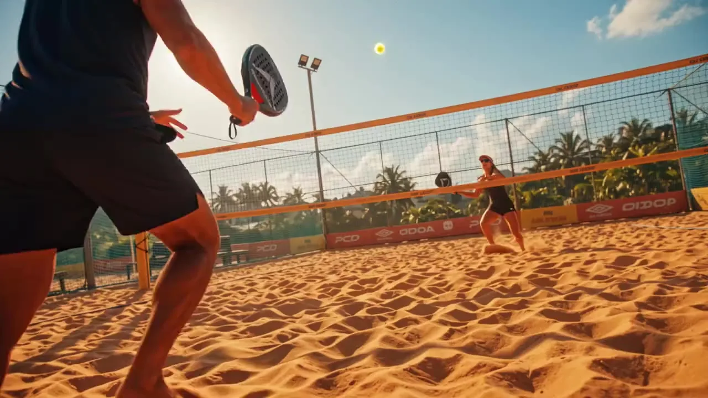

Render conceitual
Render conceitual

Etapa São Paulo · 2027
O sol pede jogo.
Beach tennis pé na areia em São Paulo. Traz a raquete.
01/01 a 04/01 dias de jogo
Praia alguma coisaSão Paulo · SP
O evento
dias.
dias.
Uma arena.
Sol de sobra.
Etapa São Paulo do Makai Beach Tennis 2027: dias de jogo em Praia alguma coisa.
dias de competição
categorias
2
etapas no circuito
Explore cada canto
Cinco cantos, uma arena só.
 Render conceitual
Render conceitual
 Render conceitual
Render conceitual
 Render conceitual
Render conceitual
Informações do evento
Informações básicas Data, local e formato da etapa
- Data
- 01/01 a 04/01 dias de competição.
- Local
- Praia alguma coisa · São Paulo · SP
- Formato
- A confirmar
Categorias categorias A confirmar
Os nomes das categorias e o formato de chaveamento entram aqui assim que forem definidos.
Inscrição & kit Vaga, valor e retirada do kit
- Valor
- Evento gratuitoSem custo de inscrição, com o kit do atleta incluso.
- Kit do atleta
- Incluso em toda inscrição.
- Retirada do kit
- Antes do evento, um ou dois dias antes.Não é feita no check-in da arena.
Premiação Ainda não divulgada A confirmar
A premiação das categorias ainda não foi divulgada. Assim que for definida, ela aparece aqui — junto com o regulamento da etapa.
Clínica Ainda não divulgada A confirmar
Está prevista uma clínica durante a etapa. Quem participa recebe a medalha Makai — ela sai da clínica, não vem no kit do atleta.
Data, formato e como participar ainda a confirmar.
Ver a medalhaRegulamento Regras completas da disputa A confirmar
O regulamento completo sai antes da abertura das inscrições. É nele que entram as regras de disputa e a formação de duplas.

Kit & inscrição
Sua vaga
Sua vaga
vem com kit.
Se inscreveu, levou: camiseta oficial e sacochila da etapa, pra jogar e pra ir embora com a cara do Makai.
-

Camiseta oficial Amarelo da marca, estampa da etapa. Tabela de medidas -

Sacochila Leva raquete, toalha e o resto até a areia.
Inscrição + kit
Evento gratuito
Sem custo de inscrição, com o kit do atleta incluso.
Inscrições em breve

Bônus da clínica
Medalha exclusiva para clínica
Ela é de quem participa da clínica da etapa — tem que suar pra levar pra casa.

Etapas 2027
Cada partida aqui
Cada partida aqui
pontua.
O Makai Beach Tennis 2027 passa por 2 cidades.
-
Inscrições abertas
João Pessoa
PB- Quando
- 01/01 a 04/01
- Onde
- Praia alguma coisa
-
Em breve
São Paulo
SP- Quando
- 01/01 a 04/01
- Onde
- Praia alguma coisa
Dúvidas
Perguntas rápidas.
Quando abrem as inscrições?
As datas da etapa já estão definidas, mas a abertura das inscrições ainda não tem data. Avisamos por aqui.
Preciso já ter dupla formada?
Ainda em aberto — será esclarecido no regulamento completo.
Dá pra ir só assistir?
A arena tem arquibancada para o público. Como funciona o acesso ainda será divulgado.
Vale pra algum ranking?
Ainda a confirmar para esta etapa.
Tem etapa em outra cidade?
Sim — o Makai Beach Tennis 2027 passa por 2 cidades. Veja todas em Etapas 2027.








Etapa São Paulo
O sol já tá pedindo.
01/01 a 04/01 em Praia alguma coisa. Inscrições em breve — fique de olho.
Inscrições em breveNenhum pagamento é processado nesta página.